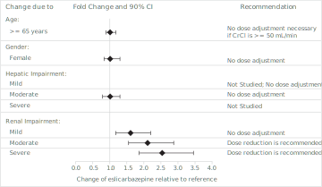

Aptiom® (eslicarbazepine acetate) tablets, for oral use Initial U.S. Approval: 2013
RECENT MAJOR CHANGES
Warnings and Precautions, Serious Dermatologic Reactions (5.2) 09/2016
INDICATIONS AND USAGE
APTIOM is indicated for the treatment of partial-onset seizures as monotherapy or adjunctive therapy. (1)
DOSAGE AND ADMINISTRATION
The recommended initial dosage of APTIOM is 400 mg once daily. For some patients, treatment may be initiated at 800 mg once daily if the need for seizure reduction outweighs an increased risk of adverse reactions. (2.2)
Increase the dose in weekly increments of 400 mg to 600 mg once daily, based on clinical response and tolerability, to a recommended maintenance dosage of 800 mg to 1600 mg once daily. (2.2)
Patients with Moderate or Severe Renal Impairment: Reduce dosage by 50%. (2.4)
Hypersensitivity to eslicarbazepine acetate or oxcarbazepine. (4)
WARNINGS AND PRECAUTIONS
Suicidal Behavior and Ideation: Monitor for suicidal thoughts or behavior. (5.1)
Serious Dermatologic Reactions, Drug Reaction with Eosinophilia and Systemic Symptoms (DRESS), Anaphylactic Reactions and Angioedema: Monitor and discontinue if another cause cannot be established. (5.2, 5.3, 5.4)
Hyponatremia: Monitor sodium levels in patients at risk or patients experiencing hyponatremia symptoms. (5.5)
Neurological Adverse Reactions: Monitor for dizziness, disturbance in gait and coordination, somnolence, fatigue, cognitive dysfunction, and visual changes. Use caution when driving or operating machinery. (5.6)
Withdrawal of APTIOM: Withdraw APTIOM gradually to minimize the risk of increased seizure frequency and status epilepticus. (2.6, 5.7)
Drug Induced Liver Injury: Discontinue APTIOM in patients with jaundice or evidence of significant liver injury. (5.8)
ADVERSE REACTIONS
Most common adverse reactions in patients receiving APTIOM (≥4% and ≥2% greater than placebo): dizziness, somnolence, nausea, headache, diplopia, vomiting, fatigue, vertigo, ataxia, blurred vision, and tremor. (6.1)
To report SUSPECTED ADVERSE REACTIONS, contact Sunovion at 1-877-737-7226 or FDA at 1-800-FDA-1088 or www.fda.gov/medwatch.
DRUG INTERACTIONS
Carbamazepine: May need dose adjustment for APTIOM or carbamazepine. (2.3, 5.6, 7.2, 7.3)
Phenytoin: Higher dosage of APTIOM may be necessary and dose adjustment may be needed for phenytoin. (2.3, 7.2, 7.3)
Phenobarbital or Primidone: Higher dosage of APTIOM may be necessary. (2.3, 7.2)
Hormonal Contraceptives: APTIOM may decrease the effectiveness of hormonal contraceptives. (7.3, 7.4, 8.9)
USE IN SPECIFIC POPULATIONS
Pregnancy: Based on animal data, may cause fetal harm. (8.1)
APTIOM (eslicarbazepine acetate) is indicated for the treatment of partial-onset seizures as monotherapy or adjunctive therapy.
DOSAGE AND ADMINISTRATION
Important Administration Instructions
Instruct patients to administer APTIOM either as whole or as crushed tablets. Instruct patients to take APTIOM either with or without food.
General Dosing Recommendations
The recommended initial dosage of APTIOM is 400 mg once daily. For some patients, treatment may be initiated at 800 mg once daily if the need for seizure reduction outweighs an increased risk of adverse reactions during initiation [see Adverse Reactions (6.1)]. Dosage should be increased in weekly increments of 400 mg to 600 mg, based on clinical response and tolerability, to a recommended maintenance dosage of 800 mg to 1600 mg once daily. For patients on APTIOM monotherapy, the 800 mg once daily maintenance dose should generally be considered in patients who are unable to tolerate a 1200 mg daily dose. For patients on APTIOM adjunctive therapy, the 1600 mg daily dose should generally be considered in patients who did not achieve a satisfactory response with a 1200 mg daily dose.
Dosage Modifications with Other Antiepileptic Drugs
Some adverse reactions occur more frequently when patients take APTIOM adjunctively with carbamazepine [see Warnings and Precautions (5.6)]. However, carbamazepine reduces the plasma concentration of eslicarbazepine [see Drug Interactions (7.2)]. When APTIOM and carbamazepine are taken concomitantly, the dose of APTIOM or carbamazepine may need to be adjusted based on efficacy and tolerability. For patients taking other enzyme-inducing AEDs (i.e., phenobarbital, phenytoin, and primidone), higher doses of APTIOM may be needed [see Drug Interactions (7.2)].
APTIOM should not be taken as an adjunctive therapy with oxcarbazepine.
Dosage Modifications in Patients with Renal Impairment
In patients with moderate and severe renal impairment (i.e., creatinine clearance < 50 mL/min), the initial, titration, and maintenance dosages should generally be reduced by 50%. Titration and maintenance dosages may be adjusted according to clinical response [see Use in Specific Populations (8.6) and Clinical Pharmacology (12.3)].
Patients with Hepatic Impairment
Dose adjustments are not required in patients with mild to moderate hepatic impairment. Use of APTIOM in patients with severe hepatic impairment has not been studied, and use in these patients is not recommended [see Use in Specific Populations (8.7) and Clinical Pharmacology (12.3)].
Discontinuation of APTIOM
When discontinuing APTIOM, reduce the dosage gradually and avoid abrupt discontinuation in order to minimize the risk of increased seizure frequency and status epilepticus [see Warnings and Precautions (5.7)].
DOSAGE FORMS AND STRENGTHS
APTIOM tablets are available in the following shapes and color (Table 1) with respective one-sided engraving:
Antiepileptic drugs (AEDs), including APTIOM, increase the risk of suicidal thoughts or behavior in patients taking these drugs for any indication. Patients treated with any AED for any indication should be monitored for the emergence or worsening of depression, suicidal thoughts or behavior, and/or any unusual changes in mood or behavior.
Pooled analyses of 199 placebo-controlled clinical trials (mono- and adjunctive therapy) of 11 different AEDs showed that patients randomized to one of the AEDs had approximately twice the risk (adjusted Relative Risk 1.8, 95% confidence interval [CI]: 1.2, 2.7) of suicidal thinking or behavior compared to patients randomized to placebo. In these trials, which had a median treatment duration of 12 weeks, the estimated incidence of suicidal behavior or ideation among 27,863 AED-treated patients was 0.43%, compared to 0.24% among 16,029 placebo-treated patients, representing an increase of approximately one case of suicidal thinking or behavior for every 530 patients treated. There were four suicides in drug-treated patients in the trials and none in placebo-treated patients, but the number of events is too small to allow any conclusion about drug effect on suicide.
The increased risk of suicidal thoughts or behavior with AEDs was observed as early as one week after starting treatment with AEDs and persisted for the duration of treatment assessed. Because most trials included in the analysis did not extend beyond 24 weeks, the risk of suicidal thoughts or behavior beyond 24 weeks could not be assessed.
The risk of suicidal thoughts or behavior was generally consistent among drugs in the data analyzed. The finding of increased risk with AEDs of varying mechanisms of action and across a range of indications suggests that the risk applies to all AEDs used for any indication. The risk did not vary substantially by age (5-100 years) in the clinical trials analyzed.
Table 2 shows absolute and relative risk by indication for all evaluated AEDs.
Table 2: Risk of Suicidal Thoughts or Behaviors by Indication for Antiepileptic Drugs in the Pooled Analysis
Indication
Placebo Patients with Events Per 1000 Patients
Drug Patients with Events Per 1000 Patients
Relative Risk: Incidence of Events in Drug Patients/Incidence in Placebo Patients
Risk Differences: Additional Drug Patients with Events Per 1000 Patients
Epilepsy
1.0
3.4
3.5
2.4
Psychiatric
5.7
8.5
1.5
2.9
Other
1.0
1.8
1.9
0.9
Total
2.4
4.3
1.8
1.9
The relative risk for suicidal thoughts or behavior was higher in clinical trials in patients with epilepsy than in clinical trials in patients with psychiatric or other conditions, but the absolute risk differences were similar for epilepsy and psychiatric indications.
Anyone considering prescribing APTIOM or any other AED must balance this risk with the risk of untreated illness. Epilepsy and many other illnesses for which AEDs are prescribed are themselves associated with morbidity and mortality and an increased risk of suicidal thoughts and behavior. Should suicidal thoughts and behavior emerge during treatment, the prescriber needs to consider whether the emergence of these symptoms in any given patient may be related to the illness being treated.
Patients, their caregivers, and families should be informed that AEDs increase the risk of suicidal thoughts and behavior and should be advised of the need to be alert for the emergence or worsening of the signs and symptoms of depression; any unusual changes in mood or behavior; or the emergence of suicidal thoughts, behavior, or thoughts about self-harm. Behaviors of concern should be reported immediately to healthcare providers.
Serious Dermatologic Reactions
Serious dermatologic reactions including Stevens-Johnson Syndrome (SJS) and toxic epidermal necrolysis (TEN) have been reported in association with APTIOM use. Serious and sometimes fatal dermatologic reactions, including TEN and SJS, have also been reported in patients using oxcarbazepine or carbamazepine which are chemically related to APTIOM. The reporting rate of these reactions associated with oxcarbazepine use exceeds the background incidence rate estimates by a factor of 3- to 10-fold. The reporting rates for Aptiom have not been determined.
Risk factors for the development of serious and potentially fatal dermatologic reactions with APTIOM use have not been identified.
If a patient develops a dermatologic reaction while taking APTIOM, discontinue APTIOM use, unless the reaction is clearly not drug-related. Patients with a prior dermatologic reaction with oxcarbazepine, carbamazepine, or APTIOM should ordinarily not be treated with APTIOM [see Contraindications (4)].
Drug Reaction with Eosinophilia and Systemic Symptoms (DRESS)/Multiorgan Hypersensitivity
Drug Reaction with Eosinophilia and Systemic Symptoms (DRESS), also known as Multiorgan Hypersensitivity, has been reported in patients taking APTIOM. DRESS may be fatal or life-threatening. DRESS typically, although not exclusively, presents with fever, rash, and/or lymphadenopathy, in association with other organ system involvement, such as hepatitis, nephritis, hematological abnormalities, myocarditis, or myositis sometimes resembling an acute viral infection. Eosinophilia is often present. Because this disorder is variable in its expression, other organ systems not noted here may be involved. It is important to note that early manifestations of hypersensitivity, such as fever or lymphadenopathy, may be present even though rash is not evident. If such signs or symptoms are present, the patient should be evaluated immediately. APTIOM should be discontinued and not be resumed if an alternative etiology for the signs or symptoms cannot be established. Patients with a prior DRESS reaction with either oxcarbazepine or APTIOM should not be treated with APTIOM [see Contraindications (4)].
Anaphylactic Reactions and Angioedema
Rare cases of anaphylaxis and angioedema have been reported in patients taking APTIOM. Anaphylaxis and angioedema associated with laryngeal edema can be fatal. If a patient develops any of these reactions after treatment with APTIOM, the drug should be discontinued. Patients with a prior anaphylactic-type reaction with either oxcarbazepine or APTIOM should not be treated with APTIOM [see Contraindications (4)].
Hyponatremia
Clinically significant hyponatremia (sodium <125 mEq/L) can develop in patients taking APTIOM. In the controlled adjunctive epilepsy trials, 4/415 patients (1.0%) treated with 800 mg and 6/410 (1.5%) patients treated with 1200 mg of APTIOM had at least one serum sodium value less than 125 mEq/L, compared to none of the patients assigned to placebo. A higher percentage of APTIOM-treated patients (5.1%) than placebo-treated patients (0.7%) experienced decreases in sodium values of more than 10 mEq/L. These effects were dose-related and generally appeared within the first 8 weeks of treatment (as early as after 3 days). Serious, life-threatening complications were reported with APTIOM-associated hyponatremia (as low as 112 mEq/L) including seizures, severe nausea/vomiting leading to dehydration, severe gait instability, and injury. Some patients required hospitalization and discontinuation of APTIOM. Concurrent hypochloremia was also present in patients with hyponatremia. Depending on the severity of hyponatremia, the dose of APTIOM may need to be reduced or discontinued. Hyponatremia was also observed in monotherapy trials.
Measurement of serum sodium and chloride levels should be considered during maintenance treatment with APTIOM, particularly if the patient is receiving other medications known to decrease serum sodium levels and should be performed if symptoms of hyponatremia develop (e.g., nausea/vomiting, malaise, headache, lethargy, confusion, irritability, muscle weakness/spasms, obtundation, or increase in seizure frequency or severity).
Neurological Adverse Reactions
Dizziness and Disturbance in Gait and Coordination
APTIOM causes dose-related increases in adverse reactions related to dizziness and disturbance in gait and coordination (dizziness, ataxia, vertigo, balance disorder, gait disturbance, nystagmus, and abnormal coordination) [see Adverse Reactions (6.1)]. In controlled adjunctive epilepsy trials, these events were reported in 26% and 38% of patients randomized to receive APTIOM at doses of 800 mg and 1200 mg/day, respectively, compared to 12% of placebo-treated patients. Events related to dizziness and disturbance in gait and coordination were more often serious in APTIOM-treated patients than in placebo-treated patients (2% vs. 0%), and more often led to study withdrawal in APTIOM-treated patients than in placebo-treated patients (9% vs. 0.7%). There was an increased risk of these adverse reactions during the titration period (compared to the maintenance period) and there also may be an increased risk of these adverse reactions in patients 60 years of age and older compared to younger adults. Nausea and vomiting also occurred with these events. Dizziness and disturbance in gait and coordination were also observed in monotherapy trials.
The incidence of dizziness was greater with the concomitant use of APTIOM and carbamazepine compared to the use of APTIOM without carbamazepine (up to 37% vs. 19%, respectively). Therefore, consider dosage modifications of both APTIOM and carbamazepine if these drugs are used concomitantly [see Dosage and Administration (2.3)].
Somnolence and Fatigue
APTIOM causes dose-dependent increases in somnolence and fatigue-related adverse reactions (fatigue, asthenia, malaise, hypersomnia, sedation, and lethargy). In the controlled adjunctive epilepsy trials, these events were reported in 13% of placebo patients, 16% of patients randomized to receive 800 mg/day APTIOM, and 28% of patients randomized to receive 1200 mg/day APTIOM. Somnolence and fatigue-related events were serious in 0.3% of APTIOM-treated patients (and 0 placebo patients) and led to discontinuation in 3% of APTIOM-treated patients (and 0.7% of placebo-treated patients). Somnolence and fatigue were also observed in monotherapy trials.
Cognitive Dysfunction
APTIOM causes dose-dependent increases in cognitive dysfunction-related events (memory impairment, disturbance in attention, amnesia, confusional state, aphasia, speech disorder, slowness of thought, disorientation, and psychomotor retardation). In the controlled adjunctive epilepsy trials, these events were reported in 1% of placebo patients, 4% of patients randomized to receive 800 mg/day APTIOM, and 7% of patients randomized to receive 1200 mg/day APTIOM. Cognitive dysfunction-related events were serious in 0.2% of APTIOM-treated patients (and 0.2% of placebo patients) and led to discontinuation in 1% of APTIOM-treated patients (and 0.5% of placebo-treated patients). Cognitive dysfunction events were also observed in monotherapy trials.
Visual Changes
APTIOM causes dose-dependent increases in events related to visual changes including diplopia, blurred vision, and impaired vision. In the controlled adjunctive epilepsy trials, these events were reported in 16% of patients randomized to receive APTIOM compared to 6% of placebo patients. Eye events were serious in 0.7% of APTIOM-treated patients (and 0 placebo patients) and led to discontinuation in 4% of APTIOM-treated patients (and 0.2% of placebo-treated patients). There was an increased risk of these adverse reactions during the titration period (compared to the maintenance period) and also in patients 60 years of age and older (compared to younger adults). The incidence of diplopia was greater with the concomitant use of APTIOM and carbamazepine compared to the use of APTIOM without carbamazepine (up to 16% vs. 6%, respectively) [see Dosage and Administration (2.3)]. Events related to visual changes were also observed in monotherapy trials.
Hazardous Activities
Prescribers should advise patients against engaging in hazardous activities requiring mental alertness, such as operating motor vehicles or dangerous machinery, until the effect of APTIOM is known.
Withdrawal of AEDs
As with all antiepileptic drugs, APTIOM should be withdrawn gradually because of the risk of increased seizure frequency and status epilepticus.
Drug Induced Liver Injury
Hepatic effects, ranging from mild to moderate elevations in transaminases (>3 times the upper limit of normal) to rare cases with concomitant elevations of total bilirubin (>2 times the upper limit of normal) have been reported with APTIOM use. Baseline evaluations of liver laboratory tests are recommended. The combination of transaminase elevations and elevated bilirubin without evidence of obstruction is generally recognized as an important predictor of severe liver injury. APTIOM should be discontinued in patients with jaundice or other evidence of significant liver injury (e.g., laboratory evidence).
Abnormal Thyroid Function Tests
Dose-dependent decreases in serum T3 and T4 (free and total) values have been observed in patients taking APTIOM. These changes were not associated with other abnormal thyroid function tests suggesting hypothyroidism. Abnormal thyroid function tests should be clinically evaluated.
ADVERSE REACTIONS
The following adverse reactions are described in more detail in the Warnings and Precautions section of the label:
Because clinical trials are conducted under widely varying conditions, adverse reaction rates observed in the clinical trials of a drug cannot be directly compared to rates in the clinical trials of another drug and may not reflect the rates observed in practice.
In monotherapy trials in patients with partial-onset seizures [Study 1 and Study 2, see Clinical Studies (14.1)], 365 patients received APTIOM, of whom 225 were treated for longer than 12 months and 134 for longer than 24 months. Of the patients in those trials, 95% were between 18 and 65 years old; 48% were male, and 84% were Caucasian. Across controlled and uncontrolled trials in patients receiving adjunctive therapy for partial-onset seizures, 1195 patients received APTIOM, of whom 586 were treated for longer than 6 months and 462 for longer than 12 months. In the placebo controlled adjunctive therapy trials in patients with partial-onset seizures (Study 3, Study 4 and Study 5), 1021 patients received APTIOM. Of the patients in those trials, approximately 95% were between 18 and 60 years old, approximately 50% were male, and approximately 80% were Caucasian.
Monotherapy Historical Control Trials
In the monotherapy epilepsy trials (Study 1 and Study 2), 13% of patients randomized to receive APTIOM at the recommended doses of 1200 mg and 1600 mg once daily discontinued from the trials as a result of an adverse event. The adverse reaction most commonly (≥1% on APTIOM) leading to discontinuation was hyponatremia.
Adverse reactions observed in these studies were generally similar to those observed and attributed to drug in adjunctive placebo-controlled studies. Because these studies did not include a placebo control group, causality could not be established.
Dizziness, nausea, somnolence, and fatigue were all reported at lower incidences during the AED Withdrawal Phase and Monotherapy Phase compared with the Titration Phase.
Adjunctive Therapy Controlled Trials
In the controlled adjunctive therapy epilepsy trials (Study 3, Study 4, and Study 5), the rate of discontinuation as a result of any adverse reaction was 14% for the 800 mg dose, 25% for the 1200 mg dose, and 7% in subjects randomized to placebo. The adverse reactions most commonly (≥1% in any APTIOM treatment group, and greater than placebo) leading to discontinuation, in descending order of frequency, were dizziness, nausea, vomiting, ataxia, diplopia, somnolence, headache, blurred vision, vertigo, asthenia, fatigue, rash, dysarthria, and tremor.
The most frequently reported adverse reactions in patients receiving APTIOM at doses of 800 mg or 1200 mg (≥4% and ≥2% greater than placebo) were dizziness, somnolence, nausea, headache, diplopia, vomiting, fatigue, vertigo, ataxia, blurred vision, and tremor.
Table 3 gives the incidence of adverse reactions that occurred in ≥2% of subjects with partial-onset seizures in any APTIOM treatment group and for which the incidence was greater than placebo during the controlled clinical trials. Adverse reactions during titration were less frequent for patients who began therapy at an initial dose of 400 mg for 1 week and then increased to 800 mg compared to patients who initiated therapy at 800 mg.
Table 3: Adverse Reactions Incidence in Pooled Controlled Clinical Trials of Adjunctive Therapy in Adults (Events ≥2% of Patients in the APTIOM 800 mg or 1200 mg Dose Group and More Frequent Than in the Placebo Group)
Placebo
APTIOM
800 mg
1200 mg
(N=426) %
(N=415) %
(N=410) %
Ear and labyrinth disorders
Vertigo
<1
2
6
Eye disorders
Diplopia
Blurred vision
Visual impairment
2
1
1
9
6
2
11
5
1
Gastrointestinal disorders
Nausea
Vomiting
Diarrhea
Constipation
Abdominal pain
Gastritis
5
3
3
1
1
<1
10
6
4
2
2
2
16
10
2
2
2
<1
General disorders and administration site conditions
Fatigue
Asthenia
Gait disturbance
Peripheral edema
4
2
<1
1
4
2
2
2
7
3
2
1
Infections and Infestations
Urinary tract infections
1
2
2
Injury, poisoning and procedural complications
Fall
1
3
1
Metabolism and nutrition disorders
Hyponatremia
<1
2
2
Nervous system disorders
Dizziness
Somnolence
Headache
Ataxia
Balance disorder
Tremor
Dysarthria
Memory impairment
Nystagmus
9
8
9 2
<1
1
0
<1
<1
20
11
13
4
3
2
1
1
1
28
18
15
6
3
4
2
2
2
Psychiatric disorders
Depression
Insomnia
2 1
1 2
3 2
Respiratory, thoracic and mediastinal disorders
Cough
1
2
1
Skin and subcutaneous tissue disorders
Rash
1
1
3
Vascular disorders
Hypertension
1
1
2
Other Adverse Reactions with APTIOM Use
Compared to placebo, APTIOM use was associated with slightly higher frequencies of decreases in hemoglobin and hematocrit, increases in total cholesterol, triglycerides, and LDL, and increases in creatine phosphokinase.
Adverse Reactions Based on Gender and Race
No significant gender differences were noted in the incidence of adverse reactions. Although there were few non-Caucasian patients, no differences in the incidences of adverse reactions compared to Caucasian patients were observed.
DRUG INTERACTIONS
General Information
Several AEDs (e.g., carbamazepine, phenobarbital, phenytoin, and primidone) can induce enzymes that metabolize APTIOM and can cause decreased plasma concentrations of eslicarbazepine (see Figure 1).
APTIOM can inhibit CYP2C19, which can cause increased plasma concentrations of drugs that are metabolized by this isoenzyme (e.g., phenytoin, clobazam, and omeprazole). In vivo studies suggest that APTIOM can induce CYP3A4, decreasing plasma concentrations of drugs that are metabolized by this isoenzyme (e.g., simvastatin) (see Figure 2).
Potential for Other AEDs to Affect Eslicarbazepine
The potential impact of other AEDs on the systemic exposure (area under the curve, AUC) of eslicarbazepine, the active metabolite of APTIOM, is shown in Figure 1:
Figure 1: Potential Impact of Other AEDs on AUC of Eslicarbazepine
Potential for APTIOM to Affect Other Drugs
The potential impact of APTIOM on the systemic exposure (AUC) of other drugs (including AEDs) is shown in Figures 2a and 2b:
Figure 2a: Potential Impact of APTIOM on the AUC of AEDs
Figure 2b: Potential Impact of APTIOM on the AUC of Non-AEDs
Oral Contraceptives
Because concomitant use of APTIOM and ethinylestradiol and levonorgestrel is associated with lower plasma levels of these hormones, females of reproductive potential should use additional or alternative non-hormonal birth control.
USE IN SPECIFIC POPULATIONS
Pregnancy
Pregnancy Category C
There are no adequate and well-controlled studies in pregnant women. In oral studies conducted in pregnant mice, rats, and rabbits, eslicarbazepine acetate demonstrated developmental toxicity, including teratogenicity (mice), embryolethality (rats), and fetal growth retardation, at clinically relevant doses. APTIOM should be used during pregnancy only if the potential benefit justifies the potential risk to the fetus.
When eslicarbazepine acetate was orally administered (150, 350, 650 mg/kg/day) to pregnant mice throughout organogenesis, increased incidences of fetal malformations was observed at all doses and fetal growth retardation was observed at the mid and high doses. A no-effect dose for adverse developmental effects was not identified. At the lowest dose tested, plasma eslicarbazepine exposure (Cmax, AUC) is less than that in humans at the maximum recommended human dose (MRHD, 1600 mg/day).
Oral administration of eslicarbazepine acetate (40, 160, 320 mg/kg/day) to pregnant rabbits throughout organogenesis resulted in fetal growth retardation and increased incidences of skeletal variations at the mid and high doses. The no-effect dose (40 mg/kg/day) is less than the MRHD on a mg/m² basis.
Oral administration to pregnant rats (65, 125, 250 mg/kg/day) throughout organogenesis resulted in embryolethality at all doses, increased incidences of skeletal variations at the mid and high doses, and fetal growth retardation at the high dose. The lowest dose tested (65 mg/kg/day) is less than the MRHD on a mg/m² basis.
When eslicarbazepine acetate was orally administered to female mice during pregnancy and lactation (150, 350, 650 mg/kg/day), the gestation period was prolonged at the highest dose tested. In offspring, a persistent reduction in offspring body weight and delayed physical development and sexual maturation were observed at the mid and high doses. The lowest dose tested (150 mg/kg/day) is less than the MRHD on a mg/m² basis.
When eslicarbazepine acetate was orally administered (65, 125, 250 mg/kg/day) to rats during pregnancy and lactation, reduced offspring body weight was seen at the mid and high doses. Delayed sexual maturation and a neurological deficit (decreased motor coordination) were observed at the highest dose tested. The no-effect dose for adverse developmental effects (65 mg/kg/day) is less than the MRHD on a mg/m² basis.
The rat data are of uncertain relevance to humans because of differences in metabolic profile between species.
Pregnancy Registry
Physicians are advised to recommend that pregnant patients taking APTIOM enroll in the North American Antiepileptic Drug Pregnancy Registry. This can be done by calling 1-888-233-2334 (toll-free), and must be done by patients themselves. Information on the registry can also be found at the website http://www.aedpregnancyregistry.org/.
Nursing Mothers
Eslicarbazepine is excreted in human milk. Because of the potential for serious adverse reactions in nursing infants from APTIOM, a decision should be made whether to discontinue nursing or to discontinue the drug, taking into account the importance of the drug to the mother.
Pediatric Use
Safety and effectiveness in patients below 18 years of age have not been established.
In a juvenile animal study in which eslicarbazepine acetate (40, 60, 160 mg/kg/day) was orally administered to young dogs for 10 months starting on postnatal day 21, mortality and evidence of immunotoxicity (bone marrow hypocellularity and lymphoid tissue depletion) were observed at all doses. Convulsions were seen at the highest dose tested. Adverse effects on bone growth (decreased bone mineral content and density) were seen in females at all doses at the end of the dosing period, but not at the end of a 2-month recovery period. None of these findings were reported in adult dogs dosed with eslicarbazepine acetate for up to 12 months in duration. A no-effect dose for adverse effects on juvenile dogs was not identified.
Geriatric Use
There were insufficient numbers of patients ≥65 years old enrolled in the controlled adjunctive epilepsy trials (N=15) to determine the efficacy of APTIOM in this patient population. The pharmacokinetics of APTIOM were evaluated in elderly healthy subjects (N=12) (Figure 3). Although the pharmacokinetics of eslicarbazepine are not affected by age independently, dose selection should take in consideration the greater frequency of renal impairment and other concomitant medical conditions and drug therapies in the elderly patient. Dose adjustment is necessary if CrCl is <50 mL/min [see Clinical Pharmacology (12.3)].
Patients with Renal Impairment
Clearance of eslicarbazepine is decreased in patients with impaired renal function and is correlated with creatinine clearance. Dosage adjustment is necessary in patients with CrCl<50 mL/min (Figure 3) [see Dosage and Administration (2.4) and Clinical Pharmacology (12.3)].
Patients with Hepatic Impairment
Dose adjustments are not required in patients with mild to moderate hepatic impairment (Figure 3). Use of APTIOM in patients with severe hepatic impairment has not been evaluated, and use in these patients is not recommended [see Clinical Pharmacology (12.3)].
Figure 3: Impact of Intrinsic Factors on AUC of Eslicarbazepine

Females of Reproductive Potential
Because concomitant use of APTIOM and ethinylestradiol and levonorgestrel is associated with lower plasma levels of these hormones, females of reproductive potential should use additional or alternative non-hormonal birth control [see Drug Interactions (7.3, 7.4)].
DRUG ABUSE AND DEPENDENCE
Controlled Substance
APTIOM is not a controlled substance.
Abuse
Prescription drug abuse is the intentional non-therapeutic use of a drug, even once, for its rewarding psychological or physiological effects. Drug addiction, which develops after repeated drug abuse, is characterized by a strong desire to take a drug despite harmful consequences, difficulty in controlling its use, giving a higher priority to drug use than to obligations, increased tolerance, and sometimes physical withdrawal. Drug abuse and drug addiction are separate and distinct from physical dependence (for example, abuse may not be accompanied by physical dependence) [see Drug Abuse and Dependence (9.3)].
In a human abuse study in recreational sedative abusers APTIOM showed no evidence of abuse. In Phase 1, 1.5% of the healthy volunteers taking APTIOM reported euphoria compared to 0.4% taking placebo.
Dependence
Physical dependence is characterized by withdrawal symptoms after abrupt discontinuation or a significant dose reduction of a drug.
The potential for APTIOM to produce withdrawal symptoms has not been adequately evaluated. In general, antiepileptic drugs should not be abruptly discontinued in patients with epilepsy because of the risk of increased seizure frequency and status epilepticus.
OVERDOSAGE
Signs, Symptoms, and Laboratory Findings of Acute Overdose in Humans
Symptoms of overdose are consistent with the known adverse reactions of APTIOM and include hyponatremia (sometimes severe), dizziness, nausea, vomiting, somnolence, euphoria, oral paraesthesia, ataxia, walking difficulties, and diplopia. The maximum dosage studied in open-label monotherapy treatment following withdrawal of concomitant AEDs was 2400 mg once daily.
Treatment or Management of Overdose
There is no specific antidote for overdose with APTIOM. Symptomatic and supportive treatment should be administered as appropriate. Removal of the drug by gastric lavage and/or inactivation by administering activated charcoal should be considered.
Standard hemodialysis procedures result in partial clearance of APTIOM. Hemodialysis may be considered based on the patient's clinical state or in patients with significant renal impairment.
DESCRIPTION
The chemical name of APTIOM (eslicarbazepine acetate) is (S)-10-Acetoxy-10,11-dihydro-5H-dibenz[b,f]azepine-5-carboxamide. APTIOM is a dibenz[b,f]azepine-5-carboxamide derivative. Its molecular formula is C17H16N2O3 and its molecular weight is 296.32. The chemical structure is:
APTIOM is a white to off-white, odorless crystalline solid. It is insoluble in hexane, very slightly soluble in aqueous solvents and soluble in organic solvents such as acetone, acetonitrile, and methanol.
Each APTIOM tablet contains 200 mg, 400 mg, 600 mg or 800 mg of eslicarbazepine acetate and the following inactive ingredients: povidone, croscarmellose sodium, and magnesium stearate.
CLINICAL PHARMACOLOGY
Mechanism of Action
APTIOM is extensively converted to eslicarbazepine, which is considered to be responsible for therapeutic effects in humans. The precise mechanism(s) by which eslicarbazepine exerts anticonvulsant activity is unknown but is thought to involve inhibition of voltage-gated sodium channels.
Pharmacodynamics
The effect of APTIOM on cardiac repolarization was evaluated in a randomized, double-blind, placebo- and active-controlled 4-period crossover trial in healthy adult men and women. Subjects received APTIOM 1200 mg once daily x 5 days, APTIOM 2400 mg once daily x 5 days, an active-control, moxifloxacin 400 mg x 1 dose on Day 5, and placebo once daily x 5 days. At both doses of APTIOM, no significant effect on the QTc interval was detected.
Pharmacokinetics
The pharmacokinetics of eslicarbazepine is linear and dose-proportional in the dose range of 400 mg to 1600 mg once daily, both in healthy subjects and patients. The apparent half-life of eslicarbazepine in plasma was 13-20 hours in epilepsy patients. Steady-state plasma concentrations are attained after 4 to 5 days of once daily dosing.
Absorption, Distribution, Metabolism, and Excretion
Absorption
APTIOM is mostly undetectable (0.01% of the systemic exposure) after oral administration. Eslicarbazepine, the major metabolite, is primarily responsible for the pharmacological effect of APTIOM. Peak plasma concentrations (Cmax) of eslicarbazepine are attained at 1-4 hours post-dose. Eslicarbazepine is highly bioavailable, because the amount of eslicarbazepine and glucuronide metabolites recovered in urine corresponded to more than 90% of an APTIOM dose. Food has no effect on the pharmacokinetics of eslicarbazepine after oral administration of APTIOM.
Distribution
The binding of eslicarbazepine to plasma proteins is relatively low (<40%) and independent of concentration. In vitro studies have shown that plasma protein binding was not relevantly affected by the presence of warfarin, diazepam, digoxin, phenytoin, or tolbutamide. Similarly, the binding of warfarin, diazepam, digoxin, phenytoin or tolbutamide was not significantly affected by the presence of eslicarbazepine. The apparent volume of distribution of eslicarbazepine is 61 L for body weight of 70 kg based on population PK analysis.
Metabolism
APTIOM is rapidly and extensively metabolized to its major active metabolite eslicarbazepine by hydrolytic first-pass metabolism. Eslicarbazepine corresponds to 91% of systemic exposure. The systemic exposure to minor active metabolites of (R)-licarbazepine is 5% and oxcarbazepine is 1%. The inactive glucuronides of these active metabolites correspond to approximately 3% of systemic exposure.
In in vitro studies in human liver microsomes, eslicarbazepine had no clinically relevant inhibitory effect on the activity of CYP1A2, CYP2A6, CYP2B6, CYP2D6, CYP2E1, and CYP3A4, and only a moderate inhibitory effect on CYP2C19. Studies with eslicarbazepine in fresh human hepatocytes showed no induction of enzymes involved in glucuronidation and sulfation of 7‑hydroxy-coumarin. A mild activation of UGT1A1-mediated glucuronidation was observed in human hepatic microsomes.
No apparent autoinduction of metabolism has been observed with APTIOM in humans.
Excretion
APTIOM metabolites are eliminated from the systemic circulation primarily by renal excretion, in the unchanged and glucuronide conjugate forms. In total, eslicarbazepine and its glucuronide account for more than 90% of total metabolites excreted in urine, approximately two thirds in the unchanged form and one third as glucuronide conjugate. Other minor metabolites account for the remaining 10% excreted in the urine. In healthy subjects with normal renal function, the renal clearance of eslicarbazepine (approximately 20 mL/min) is substantially lower than glomerular filtration rate (80-120 mL/min), suggesting that renal tubular reabsorption occurs. The apparent plasma half-life of eslicarbazepine was 13-20 hours in epilepsy patients [see Dosage and Administration (2.4) and Use in Specific Populations (8.6)].
Specific Populations
Elderly (≥65 years of age)
The pharmacokinetic profile of eslicarbazepine was unaffected in elderly subjects with creatinine clearance >60 mL/min compared to healthy subjects (18-40 years) after single and repeated doses of 600 mg APTIOM during 8 days of dosing. No dose adjustment is necessary in adults based on age, if CrCl is ≥50 mL/min.
Gender
Studies in healthy subjects and patients showed that pharmacokinetics of eslicarbazepine was not affected by gender.
Race
No clinically significant effect of race (Caucasian N=849, Black N=53, Asian N=65, and Other N=51) on the pharmacokinetics of eslicarbazepine was noted in a population pharmacokinetic analysis of pooled data from the clinical studies.
Renal Impairment
APTIOM metabolites are eliminated from the systemic circulation primarily by renal excretion. The extent of systemic exposure of eslicarbazepine following an 800 mg single dose was increased by 62% in patients with mild renal impairment (CrCl 50-80 mL/min), by 2-fold in patients with moderate renal impairment (CrCl 30-49 mL/min) and by 2.5-fold in patients with severe renal impairment (CrCl <30 mL/min) in comparison to the healthy subjects (CrCl >80 mL/min). Dosage adjustment is recommended in patients with creatinine clearance below 50 mL/min [see Dosage and Administration (2.4) and Use in Specific Populations (8.6)].
In patients with end stage renal disease, repeated hemodialysis removed APTIOM metabolites from systemic circulation.
Hepatic Impairment
The pharmacokinetics and metabolism of APTIOM was evaluated in healthy subjects and patients with moderate liver impairment (7-9 points on the Child-Pugh assessment) after multiple oral doses. Moderate hepatic impairment did not affect the pharmacokinetics of APTIOM. No dose adjustment is recommended in patients with mild to moderate liver impairment.
The pharmacokinetics of APTIOM has not been studied in patients with severe hepatic impairment.
NONCLINICAL TOXICOLOGY
Carcinogenesis, Mutagenesis, Impairment of Fertility
Carcinogenesis
In a two-year carcinogenicity study in mice, eslicarbazepine acetate was administered orally at doses of 100, 250, and 600 mg/kg/day. An increase in the incidence of hepatocellular adenomas and carcinomas was observed at 250 and 600 mg/kg/day in males and at 600 mg/kg/day in females. The dose not associated with an increase in tumors (100 mg/kg/day) is less than the maximum recommended human dose (MRHD) (1600 mg/day for monotherapy) on a mg/m² basis.
Mutagenesis
Eslicarbazepine acetate and eslicarbazepine were not mutagenic in the in vitro Ames assay. In in vitro assays in mammalian cells, eslicarbazepine acetate and eslicarbazepine were not clastogenic in human peripheral blood lymphocytes; however, eslicarbazepine acetate was clastogenic in Chinese hamster ovary (CHO) cells, with and without metabolic activation. Eslicarbazepine acetate was positive in the in vitro mouse lymphoma tk assay in the absence of metabolic activation. Eslicarbazepine acetate was not clastogenic in the in vivo mouse micronucleus assay.
Impairment of Fertility
When eslicarbazepine acetate (150, 350, and 650 mg/kg/day) was orally administered to male and female mice prior to and throughout the mating period, and continuing in females to gestation day 6, there was an increase in embryolethality at all doses. The lowest dose tested is less than the MRHD on a mg/m² basis.
When eslicarbazepine acetate (65, 125, 250 mg/kg/day) was orally administered to male and female rats prior to and throughout the mating period, and continuing in females to implantation, lengthening of the estrus cycle was observed at the highest dose tested. The data in rats are of uncertain relevance to humans because of differences in metabolic profile between species.
CLINICAL STUDIES
Monotherapy for Partial-Onset Seizures
The effectiveness of APTIOM as monotherapy for partial-onset seizures was established in two identical, dose-blinded historical control trials in a total of 365 patients with epilepsy (Study 1 and Study 2). In these trials, patients were randomized in a 2:1 ratio to receive either APTIOM 1600 mg or 1200 mg once daily, and their responses were compared to those of a historical control group. The historical control methodology is described in a publication by French et al. [see References (15)]. The historical control consisted of a pooled analysis of the control groups from 8 trials of similar design, which utilized a subtherapeutic dose of an AED as a comparator. Statistical superiority to the historical control was considered to be demonstrated if the upper limit from a 2-sided 95% confidence interval for the percentage of patients meeting exit criteria in patients receiving APTIOM remained below the lower 95% prediction interval of 65% derived from the historical control data.
In Study 1 and Study 2, patients ≥16 years of age experienced at least 4 seizures during the baseline period with no 28-day seizure free period while receiving 1 or 2 AEDs (both could not be sodium-channel blocking drugs, and at least one AED was limited to 2/3 of a typical dose). APTIOM was titrated over a 1- to 2-week period followed by the gradual withdrawal of the background AED over a 6-week period, followed by a 10-week monotherapy period.
The exit criteria were one or more of the following: (1) an episode of status epilepticus, (2) emergence of a generalized tonic-clonic seizure in patients who had not had one in the past 6 months, (3) doubling of average monthly seizure count during any 28 consecutive days, (4) doubling of highest consecutive 2-day seizure frequency during the entire treatment phase, or (5) worsening of seizure severity considered by the investigator to require intervention. The primary endpoint was the cumulative 112-day exit rate in the efficacy population. Additionally, in Studies 1 and 2, if the discontinuation rate exceeded 10%, patients were randomly reassigned to be counted as exits.
The most commonly used baseline AEDs were carbamazepine, levetiracetam, valproic acid, and lamotrigine. Oxcarbazepine was used as a baseline AED in 6.6% of patients.
In Study 1, the Kaplan-Meier (K-M) estimate of the percentage of patients meeting at least 1 exit criterion was 29% (95% CI: 21%, 38%) in the 1600 mg group and 44% (95% CI 33%, 58%) in the 1200 mg group. In Study 2, the K-M estimate of the percentage of patients meeting at least 1 exit criterion was 13% (95% CI: 8%, 22%) in the 1600 mg group and 16% (95% CI: 8%, 29%) in the 1200 mg group. The upper limit of the of the 2-sided 95% CI of both doses in both trials were below the threshold of 65% derived from the historical control data, meeting the pre-specified criteria for efficacy (see Figure 4).
Figure 4: Kaplan-Meier Estimates of Cumulative 112-Day Exit Rates for Studies 1 and 2
Adjunctive Therapy for Partial-Onset Seizures
The efficacy of APTIOM as adjunctive therapy in partial-onset seizures was established in three randomized, double-blind, placebo-controlled, multicenter trials in adult patients with epilepsy (Study 3, Study 4, and Study 5). Patients enrolled had partial-onset seizures with or without secondary generalization and were not adequately controlled with 1 to 3 concomitant AEDs. During an 8-week baseline period, patients were required to have an average of ≥4 partial-onset seizures per 28 days with no seizure-free period exceeding 21 days. In these three trials, patients had a median duration of epilepsy of 19 years and a median baseline seizure frequency of 8 seizures per 28 days. Two-thirds (69%) of subjects used 2 concomitant AEDs and 28% used 1 concomitant AED. The most commonly used AEDs were carbamazepine (50%), lamotrigine (24%), valproic acid (21%), and levetiracetam (18%). Oxcarbazepine was not allowed as a concomitant AED.
Studies 3 and 4 compared dosages of APTIOM 400, 800, and 1200 mg once daily with placebo. Study 5 compared dosages of APTIOM 800 and 1200 mg once daily with placebo. In all three trials, following an 8-week Baseline Phase, which established a baseline seizure frequency, subjects were randomized to a treatment arm. Patients entered a treatment period consisting of an initial titration phase (2 weeks), and a subsequent maintenance phase (12 weeks). The specific titration schedule differed amongst the three studies. Thus, patients were started on a daily dose of 400 mg or 800 mg and subsequently increased by 400 mg/day following one or two weeks, until the final daily target dose was achieved.
The standardized seizure frequency during the Maintenance Phase over 28 days was the primary efficacy endpoint in all three trials. Table 4 presents the results for the primary endpoint, as well as the secondary endpoint of percent reduction from baseline in seizure frequency. The APTIOM treatment at 400 mg/day was studied in Studies 3 and 4 and did not show significant treatment effect. A statistically significant effect was observed with APTIOM treatment at doses of 800 mg/day in Studies 3 and 4, but not in Study 5, and at doses of 1200 mg/day in all 3 studies.
Table 4: Standardized Seizure Frequency During the Maintenance Phase Over 28 Days and Percent Reduction from Baseline in Seizure Frequency
Placebo
APTIOM
800 mg
1200 mg
Study 3
N
95
88
87
Seizure Frequency (LS Mean seizures per 28 days) (p-value)
6.6
5.0 (0.047*)
4.3 (0.001*)
Median Percent Reduction from Baseline in Seizure Frequency (%)
-15
-36
-39
Study 4
N
99
87
81
Seizure Frequency (LS Mean seizures per 28 days) (p-value)
8.6
6.2 (0.006*)
6.6 (0.042*)
Median Percent Reduction from Baseline in Seizure Frequency (%)
-6
-33
-28
Study 5
N
212
200
184
Seizure Frequency (LS Mean seizures per 28 days) (p-value)
7.9
6.5 (0.058)
6.0 (0.004*)
Median Percent Reduction from Baseline in Seizure Frequency (%)
-22
-30
-36
*statistically signficant compared to placebo
Figure 5 shows changes from baseline in the 28-day total partial seizure frequency by category of reduction in seizure frequency from baseline for patients treated with APTIOM and placebo in an integrated analysis across the three clinical trials. Patients in whom the seizure frequency increased are shown to the left as "Worse." Patients in whom the seizure frequency decreased are shown in four categories.
Figure 5: Proportion of Patients by Category of Seizure Reduction for APTIOM and Placebo Across All Three Double-blind Trials
REFERENCES
French JA, Wang S, Warnock B, Temkin N. Historical control monotherapy design in the treatment of epilepsy. Epilepsia 2010;51(10):1936-43.
HOW SUPPLIED/STORAGE AND HANDLING
APTIOM tablets are white, oblong and with functional scoring on one side (200 mg, 600 mg, and 800 mg) or white, circular bi‑convex and plain on one side (400 mg) and identified with strength-specific one-sided engraving on the other side, "ESL 200" (200 mg), "ESL 400" (400 mg), "ESL 600" (600 mg), or "ESL 800" (800 mg). Tablets are supplied in the following strengths and package configurations (Table 5):
Table 5: Package Configuration for APTIOM Tablets
Tablet Strength
Package Configuration
NDC Code
200 mg
Bottles of 30
63402-202-30
400 mg
Bottles of 30
63402-204-30
600 mg
Bottles of 60
63402-206-60
Bottles of 90
63402-206-90
800 mg
Bottles of 30
63402-208-30
Bottles of 90
63402-208-90
Storage
Store APTIOM tablets at 20°C to 25°C (68°F to 77°F); excursions permitted to 15°C to 30°C (59°F to 86°F) [see USP Controlled Room Temperature].
PATIENT COUNSELING INFORMATION
See FDA-approved patient labeling (Medication Guide).
Inform patients of the availability of a Medication Guide, and instruct them to read the Medication Guide prior to taking APTIOM.
Instruct patients to take APTIOM only as prescribed.
Suicidal Behavior and Ideation
Counsel patients, their caregivers, and families that AEDs, including APTIOM, may increase the risk of suicidal thoughts and behavior and advise them of the need to be alert for the emergence or worsening of symptoms of depression, any unusual changes in mood or behavior, or the emergence of suicidal thoughts, behavior, or thoughts about self-harm. Instruct patients, caregivers, and families to report behaviors of concern immediately to healthcare providers [see Warnings and Precautions (5.1)].
Serious Dermatologic Reactions
Advise patients and caregivers about the risk of potentially fatal serious skin reactions. Educate patients about the signs and symptoms that may signal a serious skin reaction. Instruct patients to consult with their healthcare provider immediately if a skin reaction occurs during treatment with APTIOM [see Warnings and Precautions (5.2)].
DRESS/Multi-organ Hypersensitivity
Instruct patients that a fever associated with signs of other organ system involvement (e.g., rash, lymphadenopathy, hepatic dysfunction) may be drug-related and should be reported to their healthcare provider immediately [see Warnings and Precautions (5.3)].
Anaphylactic Reactions and Angioedema
Advise patients of life threatening symptoms suggesting anaphylaxis or angioedema (swelling of the face, eyes, lips, tongue, or difficulty in swallowing or breathing) that can occur with APTIOM. Instruct them to immediately report these symptoms to their healthcare provider [see Warnings and Precautions (5.4)].
Hyponatremia
Advise patients that APTIOM may reduce serum sodium concentrations, especially if they are taking other medications that can lower sodium. Advise patients to report symptoms of low sodium such as nausea, tiredness, lack of energy, irritability, confusion, muscle weakness/spasms, or more frequent or more severe seizures [see Warnings and Precautions (5.5)].
Neurological Adverse Reactions
Counsel patients that APTIOM may cause dizziness, gait disturbance, somnolence/fatigue, cognitive dysfunction, and visual changes. These adverse reactions, if observed, are more likely to occur during the titration period compared to the maintenance period. Advise patients not to drive or operate machinery until they have gained sufficient experience on APTIOM to gauge whether it adversely affects their ability to drive or operate machinery [see Warnings and Precautions (5.6)].
Withdrawal of APTIOM
Advise patients not to discontinue use of APTIOM without consulting with their healthcare provider. APTIOM should be gradually withdrawn to minimize the potential of increased seizure frequency and status epilepticus [see Warnings and Precautions (5.7)].
Interaction with Oral Contraceptives
Inform patients that APTIOM can significantly decrease the effectiveness of hormonal contraceptives. Recommend that female patients of childbearing potential use additional or alternative non-hormonal forms of contraception during treatment with APTIOM and after treatment has been discontinued for at least one menstrual cycle or until otherwise instructed by their healthcare provider [see Drug Interactions (7.3, 7.4)].
Pregnancy Registry
Encourage patients to enroll in the North American Antiepileptic Drug Pregnancy Registry if they become pregnant. This Registry is collecting information about the safety of AEDs during pregnancy. To enroll, patients can call 1-888-233-2334 (toll-free) [see Use in Specific Populations (8.1)].
Manufactured for:
Sunovion Pharmaceuticals Inc. Marlborough, MA 01752 USA Under license from
What is the most important information I should know about APTIOM?
Do not stop taking APTIOM without first talking to your healthcare provider.
Stopping APTIOM suddenly can cause serious problems. Stopping a seizure medicine suddenly in a patient who has epilepsy may cause seizures that will not stop (status epilepticus).
Like other antiepileptic drugs, APTIOM may cause suicidal thoughts or actions in a very small number of people, about 1 in 500.
Call a healthcare provider right away if you have any of these symptoms, especially if they are new, worse, or worry you:
thoughts about suicide or dying
new or worse depression
feeling agitated or restless
trouble sleeping (insomnia)
acting aggressive, being angry, or violent
an extreme increase in activity and talking (mania)
attempt to commit suicide
new or worse anxiety
panic attacks
new or worse irritability
acting on dangerous impulses
other unusual changes in behavior or mood
How can I watch for early symptoms of suicidal thoughts and actions?
Pay attention to any changes, especially sudden changes, in mood, behaviors, thoughts, or feelings.
Keep all follow-up visits with your healthcare provider as scheduled.
Call your healthcare provider between visits as needed, especially if you are worried about symptoms.
Suicidal thoughts or actions may be caused by things other than medicines. If you have suicidal thoughts or actions, your healthcare provider may check for other causes.
APTIOM may cause allergic reactions or serious problems which may affect organs and other parts of your body like the liver or blood cells. You may or may not have a rash with these types of reactions.
Call your healthcare provider right away if you have any of the following:
swelling of your face, eyes, lips, or tongue
trouble swallowing or breathing
a skin rash
hives
fever, swollen glands, or sore throat that do not go away or come and go
painful sores in the mouth or around your eyes
yellowing of your skin or eyes
unusual bruising or bleeding
severe fatigue or weakness
severe muscle pain
frequent infections or infections that do not go away
APTIOM may cause the level of sodium in your blood to be low. Symptoms of low blood sodium include:
nausea
tiredness, lack of energy
irritability
confusion
muscle weakness or muscle spasms
more frequent or more severe seizures
Some medicines can also cause low sodium in your blood. Be sure to tell your healthcare provider about all the other medicines that you are taking.
What is APTIOM?
APTIOM is a prescription medicine used alone or with other medicines to treat partial-onset seizures.
It is not known if APTIOM is safe and effective in children under 18 years of age.
Who should not take APTIOM?
Do not take APTIOM if you are allergic to eslicarbazepine acetate, any of the other ingredients in APTIOM, or oxcarbazepine.
See the end of this Medication Guide for a complete list of ingredients in APTIOM.
What should I tell my healthcare provider before taking APTIOM?
Before taking APTIOM, tell your healthcare provider about all your medical conditions, including if you:
have or have had suicidal thoughts or actions, depression or mood problems
have liver problems
have kidney problems
are allergic to oxcarbazepine. Some people who are allergic to oxcarbazepine may also be allergic to APTIOM.
use birth control medicine. APTIOM may cause your birth control medicine to be less effective. Talk to your healthcare provider about the best birth control method to use.
are pregnant or plan to become pregnant. APTIOM may harm your unborn baby. Tell your healthcare provider right away if you become pregnant while taking APTIOM. You and your healthcare provider will decide if you should take APTIOM while you are pregnant.
If you become pregnant while taking APTIOM, talk to your healthcare provider about registering with the North American Antiepileptic Drug (NAAED) Pregnancy Registry. The purpose of this registry is to collect information about the safety of antiepileptic medicine during pregnancy. You can enroll in this registry by calling 1-888-233-2334.
are breastfeeding or plan to breastfeed. APTIOM passes into breast milk. You and your healthcare provider should discuss whether you should take APTIOM or breastfeed.
Tell your healthcare provider about all the medicines you take, including prescription and over-the-counter medicines, vitamins, and herbal supplements.
Taking APTIOM with certain other medicines may cause side effects or affect how well they work. Do not start or stop other medicines without talking to your healthcare provider.
Especially tell your healthcare provider if you take:
oxcarbazepine
omeprazole
phenytoin
primidone
carbamazepine
clobazam
birth control medicine
simvastatin
phenobarbital
rosuvastatin
Ask your healthcare provider or pharmacist for a list of these medicines, if you are not sure.
Know the medicines you take. Keep a list of them and show it to your healthcare provider and pharmacist when you get a new medicine.
How should I take APTIOM?
Take APTIOM exactly as your healthcare provider tells you to take it.
Do not stop taking APTIOM without talking to your healthcare provider. Stopping APTIOM suddenly can cause serious problems, including seizures that will not stop (status epilepticus).
Your healthcare provider may change your dose.
Your healthcare provider will tell you how much APTIOM to take.
APTIOM can be taken with or without food.
APTIOM can be taken as a whole tablet or crushed.
If you take too much APTIOM, call your healthcare provider or go to the nearest hospital emergency room right away.
Talk with your healthcare provider about what you should do if you miss a dose.
What should I avoid while taking APTIOM?
Do not drive, operate heavy machinery, or do dangerous activities until you know how APTIOM affects you. APTIOM may slow your thinking and motor skills.
What are the possible side effects of APTIOM?
See "What is the most important information I should know about APTIOM?"
APTIOM may cause other serious side effects including:
Nervous system problems. APTIOM may cause problems that can affect your nervous system. Symptoms of nervous system problems include:
dizziness
trouble walking or with coordination
feeling sleepy and tired
trouble concentrating
vision problems
Liver problems. APTIOM may affect your liver. Symptoms of liver problems include:
yellowing of your skin or the whites of your eyes
nausea or vomiting
loss of appetite
stomach pain
dark urine
Get medical help right away if you have any of the symptoms listed above or listed in "What is the most important information I should know about APTIOM?"
The most common side effects of APTIOM include:
dizziness
nausea
double vision
feeling tired
shakiness
sleepiness
headache
vomiting
blurred vision
problems with coordination
Tell your healthcare provider if you have any side effect that bothers you or that does not go away.
These are not all the possible side effects of APTIOM. For more information, ask your healthcare provider or pharmacist.
Call your doctor for medical advice about side effects. You may report side effects to FDA at 1-800-FDA-1088.
How should I store APTIOM?
Store APTIOM at 68°F to 77°F (20°C to 25°C).
Safely throw away medicine that is out of date or no longer needed.
Keep APTIOM and all medicines out of reach of children.
What are the ingredients in APTIOM?
Active ingredient: eslicarbazepine acetate
Inactive ingredients: povidone, croscarmellose sodium, and magnesium stearate.
General information about the safe and effective use of APTIOM.
Medicines are sometimes prescribed for purposes other than those listed in a Medication Guide. Do not use APTIOM for a condition for which it was not prescribed. Do not give APTIOM to other people, even if they have the same symptoms that you have. It may harm them.
This Medication Guide summarizes the most important information about APTIOM. If you would like more information, talk with your healthcare provider. You can ask your pharmacist or healthcare provider for information about APTIOM that is written for health professionals.
For more information, go to www.aptiom.com or call 1-888-394-7377.
This Medication Guide has been approved by the U.S. Food and Drug Administration. Revised 08/2015